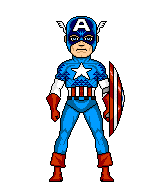

|
|
Introduction to
 1940! As the world teetered on the brink of global war, frail Steve Rogers entered a secret laboratory and was transformed into the American super soldier! For four thrilling years, he battled the Axis powers - until a freak stroke of fate threw him into suspended animation. When he awoke, he was a man decades out of his time! Since that fateful day, Steve Rogers has sought his destiny in this brave new world! Eager to serve his country during World War II, Steve Rogers was transformed into a physically perfect man by the government's Super Soldier program, becoming the united states sentinel of liberty! Armed with an indestructible shield and the physical prowess of an Olympic athlete, Rogers fought valiantly to uphold the ideals and principles of democracy. At the end of war he was accidentally frozen in a block of ice and preserved for decades until discovered and revived by the avengers. Now a man out of time, he is ever vigilant in his battles to protect the innocent and to uphold the beliefs upon which America was founded. Willing to sacrifice his own life for the greater good, Steve Rogers is a physical embodiment of truth, justice, and honor He is......CAPTAIN AMERICA!
|